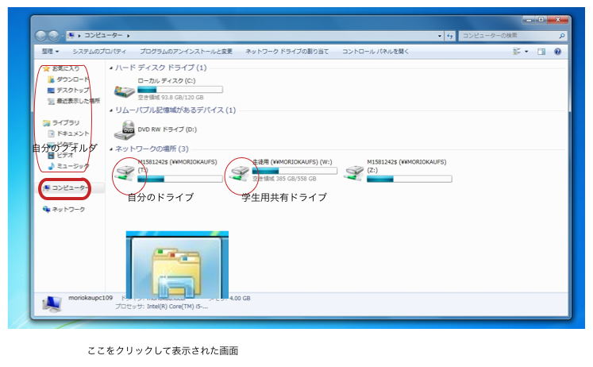

情報処理演習2021 パソコンの使い方
目次
はてなのページ / 今日の講義 / グーグルサイト / 講義用グーグルドライブ / 掲示版
1 IDとパスワード
1.1 ID とパスワードとは
ID はあなたの 識別名 で，その パスワード は自分だけが知っている 秘密の言葉 です。
IDとパスワードの組み合わせが，利用する システム に 登録 されています。
ログイン とは，システムにIDとパスワードの組を入力することで，本人で あることを認証してもらい，システム内部に入って，内部の情報を使える状態 になることです。
IDは一度決まると普通変更できませんが，パスワードは変更可能です。
1.2 盛岡大学で使うシステム
ここでいう システム とは，コンピュータやインターネットサイトで，
- 本人確認の認証を受けてシステム内部に入ると，
- 自分の情報やサービスを扱える
ようなものをいいます。
盛岡大学で使うコンピュータやネットワークサービスで，IDとパスワードが必 要なシステムには，以下のものがあります:
- コンピュータ室のPC (A306, A311, B313)
- Webメール
- 学務用の盛岡大学ポータルサイト
- melly
盛岡大学ポータルサイト
学年暦や学務からのお知らせ，出席簿，シラバスがあります。
- 端末とは別のIDでログインします。
- 大学からの配布資料を確認してください
Webメール
盛岡大学が運用しているメールサーバを
- Webメールで，ブラウザからログインします。
- 端末と同じIDとパスワードでログインします。
使い方は別に紹介します。
端末室のPC
A306, A311, B313, 図書館にある端末室のPC達です。
ID (識別名)とパスワードが配布されています。
ID は学生番号です。
端末室のPCを使うために使います。
パスワードの変更
配布されたIDを変更することはできませんが，パスワードは自分と管理者だけが変更できます。
配布されたパスワードは，機械的に作られていて，覚えにくく忘れやすいものです。 自分だけが憶え易く，他人には憶え難いものに変更しましょう。
パスワードを忘れたら
情報処理室の人にその旨，伝えてください。
1.3 パスワードについて
自分には覚えやすく，他人からは覚えにくく，類推しにくい文字の列にしましょう。
下記ページやサイトを参考にしてください：
2 Webブラウザの使い方
簡単に，インターネット・エクスプローラの使い方を説明します。
2.1 お気に入り
- IE の☆印メニューにあるお気に入りと履歴の使い方を覚えましょう。
- Wikiの自分のページを*お気に入り*に登録しましょう。
- *お気に入り*がどこに保存されているか確認しましょう。
2.2 履歴
- 履歴にはサイトごとに，今日訪問したページが時間順で並んでいます。
- 履歴の中から重要なページをお気に入りに入れることができます。
- 右クリックしてください。
- 戻るボタンから履歴を見てみましょう。
- 矢印をマウスで長押し
- 履歴の長期保存
- インターネットオプションの「終了時に閲覧の履歴を削除」のチェックをはずす
- C:/Users/自分/AppData/Local/MicroSoft/Windows/History が履歴保存ファイル
- フォルダオプションの表示，「保護されたOSファイルを表示しない」をはずす
2.3 タブ
タブは，ブラウザで同時に開いているページ(を指す目印)です。
- 新しいタブを開きましょう。
- +をクリックして，新しいタブを開きましょう。
- リンクを新しいタブで開きましょう。
- コントロールを押しながらリンクをクリック。
- 閲覧ページを其のままにして，新らしいウィンドウでリンク先のページを 開きます。
3 パスワードのよしあし
3.1 パスワードを破られる危険性
パスワードを盗まれると、下記の危険性がある。
情報流出
嫌がらせや個人情報が流出したり、ハッキングされたりする
なりすまし
名前を騙られる
サービスの不正利用
自分が受けられるサービスを使われる
3.2 パスワードの攻撃方法
パスワードを知るため，パスワードを変えつつ不正なログインを繰り返す。
パスワードの発生には下記の方法がある。
- 辞書に載っている単語を利用して解読を行う辞書攻撃
- あらゆる文字の組み合わせを用いて強引に解読を行う総当たり攻撃
- ターゲットの個人情報に関する知識から、攻撃者自身がパスワードを類推する、類推攻撃
- その他、各種暗号攻撃などがある。？？？
3.3 良いパスワードとは
以下ようなのパスワードは破られやすい
- 自分や親しい人に関連する数字や文字、またはその組み合わせ
(例)誕生日、名前など
- 辞書に載っている単語をそのまま利用したもの
- 単語の文字を逆順にしたり、似た形の別の文字に置き換えたもの
良いパスワードは，下記のようなものです:
- 自分は覚えやすく，パスワード攻撃でやぶられにくいもの
- 推測しにくく、辞書にも載っていないもの
- パスワードは数字（0~9）、アルファベットの大文字（A~Z）、小文字（a~ z）、記号（@, +, -, …など）最低でも3種類組み合わせて作る
- 最低でも8文字以上はあるもの
4 ファイルやフォルダの決まりごと
4.1 サーバって？
サーバは下記のような，コンピュータのことです．
- 自分が使えるどこかのネットワークにつながっていて，
- みんなに，同時に，同じ*サービス*を提供する。
4.2 ファイル共有サービス
- ファイルサーバが，同じファイルを共有するためのサービスをしてくれます。
4.3 自分のフォルダ
自分のIDでログインすれば， どのコンピュータ室のどのPCを利用しても， 自分のための同ジフォルダが提供されます。
エクスプローラ => ライブラリ => マイドキュメント
4.4 学生用のファイル共有サービス
- 盛岡大学のネットワークに設置されたサーバで,
- 学生用のファイルサービスは，
エクスプローラ => コンピュータ => W:ドライブ => 生徒用サーバ
で見えます
- 先生が配りたいファイルやフォルダを作って，みんながそれを開いて同じ 内容をコピーすることができます。便利です。
- 学生全員が読み書きできるので，注意が必要です。
4.5 講義資料フォルダ
下記フォルダは，この講義で使う資料を共有するために使います
- コンピュータ - 学生用フォルダ（ネットワークドライブ）- 00情報処理鈴木2016
5 自分の情報の保存
この講義では，個々の学生のために，主に下記の情報の保存場所を使います
5.1 マイドキュメント
「コンピュータ」の「ネットワーク」に現れる，ドライブが盛大にあるPCど こでも使える自分専用のドライブです。在学中はずっと使い続けられると思 います。
自分専用ドライブは，'マイドキュメント'フォルダとして使えます。
イクスプローラを開いて，「ライブラリ」->「ドキュメント」->「マイドキュ
メント」とたどって，開きます。
5.2 自分の情報処理応用フォルダ
{kind=link}
6 そのほか，自分が管理する情報置場
6.1 自分のUSBメモリにいれて持ち運びする
- 自分のフォルダで右クリックし，「コピー」
- USBの自分のフォルダで右クリックし，「貼り付け」
6.2 自分のGoodgleDrive
Google Driveを読んでください
7 USBメモリ
教科書4.6節 pp.52~55 「USBメモリの使い方」「ファイル操作」参照
使う目的
講義で使うアプリと，講義で作成した文書などのデータを保存し，持ち運びします。
自宅でも同じアプリが同じ状況で使えます。
講義用アプリをUSBに準備する
講義資料フォルダから，「講義で使うアプリ」フォルダーを， 自分のUSBにコピーしてください。
- FirefoxPortable (ChromePortable)
USBメモリに「ドキュメント」フォルダーを作成してください。
ポータブル・ソフトウェア
ポータブル・ソフトウェア とは，USBメモリに入れて持ち運ぶことを考慮し て作られているソフトウェア (アプリ) のことです。
アプリの設定も一緒に持ち運べ，USBメモリを持ち運べば，どこのパソコンで も，お気に入りのものがお気に入りの状態で使えます。
USBメモリの容量に余裕があって，自分に興味があれば，フリーでポータブル なソフトウェアはとても便利です。
しかし，USBメモリ紛失の危険性や，悪意のあるソフトウェアがインストール される危険性もありますので，あくまでも自己責任でお願いします。
下記のソフトウェアはお勧めです。
- Chrome ポータブル
- FireFox ポータブル
- LibreOffice ポータブル (Office互換)
7.1 USBメモリの使い方の基本
USBメモリの内容を見る
- 新たに差した場合:
- Windows からどう処理するか聞かれる。
- フォルダを開くを選択すると，*エクスプローラ* が開かれ， 内容が表示される。
- すでに差してある場合:
- [Windows-key => コンピュータ] で エクスプローラ を開く
- サイドメニューのドライブから USBメモリに対応するドライブをクリック する。
- エクスプローラのウィンドウに内容が表示される。
USBメモリの取り出し
きちんと取り出さないとUSBの内容が壊れることがあります。
取り出し方法 - USBメモリを選択して， - 右クリックして，「取り出し」
PCの電源を落とせば，取り出せます。
USB内にフォルダを作る
USBメモリを開いて，右クリックして，新規，フォルダ
USBメモリを取り出す
- エクスプローラを開く
- サイドメニューのドライブから USBメモリに対応するドライブを右クリック し，[取り出し]を選択
- Windows から「ハードウェアの取り外し」メッセージがでたら，USBメモリを取り出す
USBへコピーする
コピーのやり方を二通り紹介します:
ドラッグ & ドロップ
- エクスプローラで，コピーしたいファイルやフォルダがある場所を開きま す。
- USBメモリのコピーしたい場所をエクスプローラで，開きます。
- コピーしたいファイルやフォルダをマウスで選択し， 開いてあった USBのウィンドウへドラッグします。
コピー & ペースト
あるいは
- コピーしたいファイルやフォルダをマウスで選択し， 右クリックし，「コ ピー」を選ぶ。
- USBメモリのコピーしたい場所をエクスプローラで，開き, 右クリックし， 「貼り付け」を選ぶと，コピーが始まる。
8 講義用アプリをUSBに準備する
この章の内容は，古いです。
学生フォルダ / H25情報処理基礎（鈴木）/
PortableApps でよく使うのは，
- Webブラウザの Firefox
- オフィスソフトウェアのLibreOffice
9 セキュリティ
9.1 セキュリティ対策について
対策のしおり：IPA 独立行政法人 情報処理推進機構 の中から，基本的なもの を選んでみました:
- セキュリティこぼれ話：初めての情報セキュリティ対策 - 09_hazimete.pdf
- ウイルス対策 スクール (ウイルスとは何かを知ろう)
- ウイルス対策 01_virus.pdf
- スマートフォンのセキュリティ対策のしおり (pdf)
読んでまとめを作ってみると良いと思います。余裕があれば，講義中にやりた いのですが。
9.2 セキュリティソフトについて
下記のサイトで調べてみましょう：
10 Web メール
10.1 利用
- https://www.morioka-u.ac.jp へ行って，Webmail リンクを探してください。
- https://www.morioka-u.ac.jp/webmail/ SquirrelMail (Wikipedia) によるメールサービスです。 盛岡大学の公式のメールサービスが動いています。
- ログインしてください:
- メール用のIDがログイン名です。
それようのパスワードを入力してください。 例年，パスワードがわかりにくいです:
- l (える) と 1 (いち) の区別がつきません
- 0 (ぜろ) と o (おー) の区別がつきません
ので，ログイン出来ない人は文字を入れ替えて試してくだあさい。
- 受信箱を開いてください。
10.2 署名の入力
署名はメールの最後に付く，差出人情報です。
「個人情報」メニューから，署名を入力しておくといいと思います。 私の署名は下記です:
鈴木正幸 suzumasa@morioka-u.ac.jp 盛岡大学 非常勤講師
10.3 パスワードの変更
パスワードを変更したい人は，「オプション」メニューから，パスワードの変更を行ってください。
10.4 作成と送信
- メールの構造を理解し，
- 本文の書き方を学び，
- 署名を作り，
- 本文の書き方にしたがって，本文を作成してください。
- 宛先を suzumasa@morioka-u.ac.jp にしてください。
- カーボンコピー (Cc:) を自分にして，自分にコピーが届くことも確認してください。
- スマホを持っていれば，スマホのアドレスにもコピーを送り，受信してください。
- 本日作成したメモを添付してください。
送信ミスの体験
存在しないアドレスへメールを送信し，なにが起こるか確かめてください。
起こったことを理解し，メモにまとめてください。
11 コンピュータとインタネットの利用環境
11.1 盛岡大学が提供してくれるサービス
- IDとパスワードの確認
- 大学内PCで有効
- 
- 自分のフォルダの確認
- 大学内PCで有効
- 講義資料フォルダの確認
- 先生が，講義用の資料やアプリを配布するために使います
- 大学内PCで有効
- 盛大ホームページ https://www.morioka-u.ac.jp
- 大学情報，Webメール
- インターネットで有効
- 盛大学務ポータル https://morioka-u.ap-cloud.com/login
- 学年暦, 出席，シラバス，お知らせ，
- インターネットで有効
- Webメール
- 盛岡大学宛のメール，
- インターネットで有効
11.2 情報処理演習のために利用するインターネット上のサービス
- 講義の入り口 https://masayuki054.hatenablog.com/entry/2016/04/04/113109
- Googleアカウント https://google.com
Googleにアカウントを作りましょう
- GoogleDrive
- レポートの提出場所に使います
- GoogleDrive
- めもの作成 https://simplenote.com
- マップの作成 https://mindmeister.com